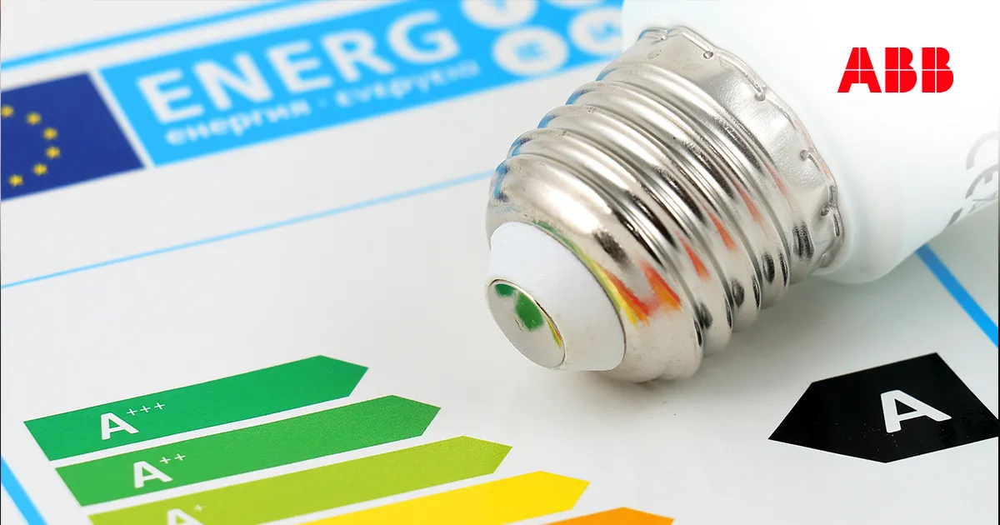
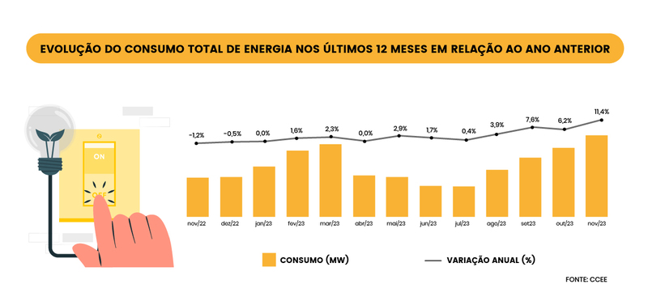
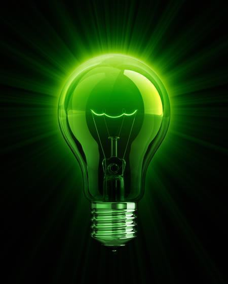

O NeoSolaris é uma plataforma inovadora de monitoramento inteligente de energia elétrica, desenvolvida para ajudar famílias, empresas e organizações a controlar seu consumo de forma precisa e eficiente.
Com dados em tempo real, gráficos detalhados e relatórios históricos, você consegue identificar padrões de consumo, reduzir desperdícios, economizar dinheiro e contribuir para um futuro mais sustentável.
O que é o NeoSolaris?
Por que escolher energia limpa?
Inspirado no ODS 7 da ONU, o NeoSolaris promove a utilização de energia acessível, confiável e renovável.
Ao monitorar o consumo de cada equipamento, você adota práticas mais conscientes e inteligentes, reduz impactos ambientais e garante economia no dia a dia.
Energia limpa não é apenas uma escolha: é um compromisso com o planeta e com as próximas gerações.
Monitoramento em tempo real
Inspirado no ODS 7 da ONU, o NeoSolaris coloca o poder do monitoramento de energia nas suas mãos.
Acompanhe em tempo real o consumo de cada equipamento, receba alertas inteligentes, reduza desperdícios e economize na conta de luz.
Adotar energia limpa não é apenas uma escolha consciente: é investir em sustentabilidade, eficiência e um futuro mais verde para todos.

O que você pode acompanhar?

⚡ Consumo instantâneo dos equipamentos

📊 Histórico detalhado de energia utilizada

🔔 Alertas de alto consumo em tempo real

🌱 Dicas para reduzir desperdícios e economizar